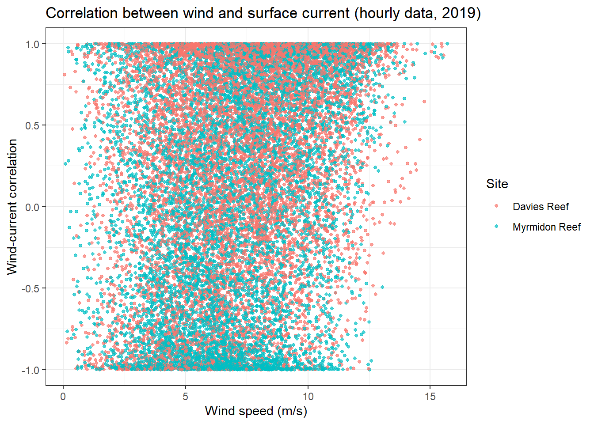
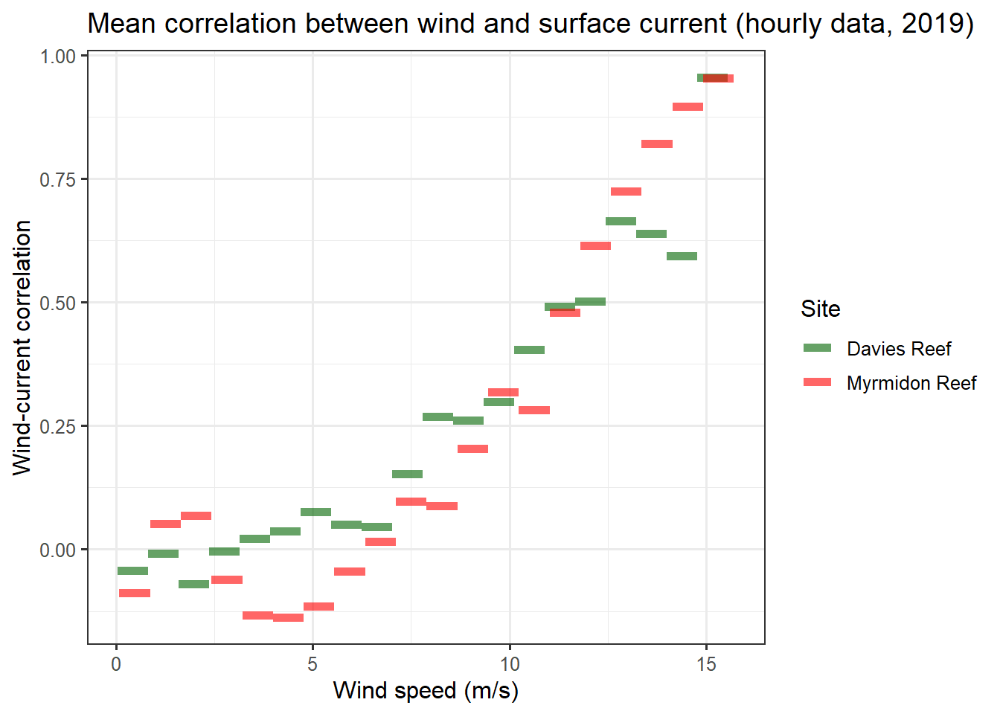

Learn how to use eReefs data to answer the question ‘How strong does the wind need to be to set the direction of the surface ocean currents?’ in .
Motivating problem
The East Australian Current (EAC) usually is a strong southward current near Myrmidon and Davies Reefs. During winter months the wind moves in a north eastern direction in the near opposite direction to the EAC. When the wind is low the surface currents are dominated by the EAC. As the wind picks up, at some speed the wind overpowers the EAC and the surface current moves in the direction of the wind.
Myrmidon Reef which is on the far outer edge of the GBR and is almost right in the middle of the southern Eastern Australian Current; and
Davies Reef which is further in the reef matrix, but in a similar sector of the GBR.
The locations of these two reefs are shown in Figure 1.
We then process the data and investigate the relationship between the strength of the wind and the direction of the surface currents for the two locations.
Show code to create map
# Plot site coordinates on an interactive map with reef boundarieslibrary(leaflet)site_coords <-read.csv("resources/site_coordinates.csv")site_map <- site_coords |>leaflet( # create a blank leaflet mapoptions =leafletOptions(attributionControl=FALSE) # remove the 'leaflet' watermark ) |>addTiles() |># add a basemap (OpenStreetMap by default)addMarkers() |># add a marker at the given coordinatesaddScaleBar()# Add the GBR reef features (WMS layer) to the mapsite_map <- site_map |>addWMSTiles(baseUrl ="https://maps.eatlas.org.au/maps/wms?", # Link to WMS serverlayers =c("ea:GBR_GBRMPA_GBR-features"), # Names of layers (located in the WMS server) to displayoptions =WMSTileOptions(format ="image/png", transparent =TRUE) ) # Display the map centred at our sitesite_map |>setView(lng =mean(site_coords$lon), lat =mean(site_coords$lat), zoom =8)
Figure 1: Myrmidon Reef and Davies Reef locations.
Analysis method
To determine the relation between the wind and the surface currents we will use the AIMS eReefs extraction tool to pull out hourly time series wind and current data for our two locations of interest. We will then look at the correlation between the wind and current vectors, where a correlation of 1 indicates they are pointing in the same direction, and -1 indicated they are in opposite directions.
Setting up to get the data
To extract the time series data using the extraction tool we need to create a CSV file containing the sites of interest. This file needs to contain the coordinates and names of the sites. To create this I first added my points manually in Google Earth Pro. This was done to simply get the location of Myrmidon and Davies Reefs. Using Google Earth to create your CSV file for the extraction tool is only useful if you don’t already know the coordinates of your sites.
The points can be added using the Add placemark tool (looks like a pin). The locations can be seen by displaying the placemark properties. The resulting KML file can be found here.
In this notebook we will download the data using scripting. There is no need to re-run the extraction request as each extraction performed by the extraction tool has a permanent public page created for it that can be used to facilitate sharing of the data.
Let’s first create a temporary folder to contain the downloaded data. Note: The temp folder is excluded using the .gitignore so it is not saved to the code repository, which is why we must reproduce it.
if (!file.exists("temp")) dir.create("temp")
Now let’s download the data. The file to download is 12.9 MB and so this download might take a little while. To allow us to re-run this script without having to wait for the download each time we first check that the download has not already been done.
The first thing we might notice about the data is that, somewhat confusingly, we have a bunch of aggregation statistics (mean, median, p5, p95, lowest, highest) which all take the same value. This is because we have extracted hourly “aggregated” data, but the time step for the eReefs model is also hourly. Therefore each row represents an aggregation over a single data point. Don’t worry if you are confused by this, it’s not important. Just think of this as a quirk of the eReefs data extraction tool. We’ll clean this up now by replacing the aggregation statistics with a single column called value and rename aggregated_date_time to date_time, to avoid any further confusion.
Much better! Now it is clear to see that the data is in long format. That is, a single row for each value and a seperate column describing the meaning of the value — in this case the column variable describes what the column value means. Converting the data into tidy format will help with subsequent analyses (and is probably also the format you are most comfortable working with). When data is in tidy format, each variable has its own column, each observation has its own row, and each value has its own cell.
If we think of the wind and current velocities as the things being “measured”, then the observations in the dataset are the values of the measurements for each time point at each site. Therefore we would like a single row for each unique combination of date_time and site_name (or latitude and longitude pair). Let’s see if this is what we get we try to “widen” the data into tidy format.
With all the NAs in the wind and current speed columns, this doesn’t look tidy at all! And it’s because we forgot to account for depth. However, we can notice that depth is actually a redundant variable in this dataset. That’s because wind speed implies a NA depth value (coded as 10000m in the extracted data) and current implies a depth of -2.35m (as this is the only depth we chose to extract). Therefore we can just remove depth entirely from our dataset without losing any information, that is, as long as we remember that the current relates to a depth of -2.35m. For the forgetful among us, we could rename the current variables to v_2.35m and u_2.35m. In fact moving the depth into the variable names would be a good solution to create a tidy dataset if we had selected multiple depths.
# Widen to tidy formatdata_tidy <- data2 |># Drop the depth columnselect(-depth) |># Widen into tidy formatpivot_wider(names_from ="variable", values_from ="value" ) data_tidy |>head() |> knitr::kable() |> kableExtra::kable_styling()
date_time
site_name
latitude
longitude
wspeed_u
wspeed_v
v
u
2019-01-01T00:00
Myrmidon Reef
-18.26560
147.3890
-9.568488
3.260430
0.0473110
0.0124983
2019-01-01T00:00
Davies Reef
-18.82284
147.6452
-8.880175
2.756750
0.1003906
-0.0488348
2019-01-01T01:00
Myrmidon Reef
-18.26560
147.3890
-9.420339
3.528335
-0.0132966
-0.0292120
2019-01-01T01:00
Davies Reef
-18.82284
147.6452
-8.749271
2.753487
-0.0361294
-0.0908067
2019-01-01T02:00
Myrmidon Reef
-18.26560
147.3890
-9.333500
3.765564
-0.0665416
-0.0605202
2019-01-01T02:00
Davies Reef
-18.82284
147.6452
-8.463824
2.587230
-0.1804798
-0.1182885
Now each row gives the wind and current speeds for different sites at different points in time.
Correlation
Our aim is to create an index that estimates the correlation of the current and the wind vectors.
The correlation of the current and wind vectors can be estimated based using the dot product. An overview of the relationship between correlation and using the dot product is described in Geometric Interpretation of the Correlation between Two Variables. The correlation between the two vectors is given by:
\[
r = \cos(\theta) = \frac{a \cdot b}{||a||\cdot||b||}
\]
where \(a \cdot b\) is the dot product between the two vectors and \(||a||\) and \(||b||\) are the magnitudes of the vectors. The dot product can be calculated as
Let’s look at the relationship between the wind and current as a function of the wind speed. Here we are considering each hourly sample as an independent estimate of the relationship. In reality this is not the case as the longer the wind blows the more effect it will have on the current. As this is just a coding example and not an in-depth analysis we don’t need to worry about this limitation of the analysis.
Let’s create a scatter plot to see if there is a relationship between the wind and currents.
data_corr |>ggplot(aes(x = wind_mag, y = wind_curr_corr, color = site_name )) +geom_point(size =1, alpha =0.7) +labs(title ="Correlation between wind and surface current (hourly data, 2019)",x ="Wind speed (m/s)", y ="Wind-current correlation", color ="Site" ) +theme_bw()

This scatter plot shows that the relationship between wind and current is weak. This is not surprising given that we are considering just the hourly samples, with no consideration for how long the wind has been blowing. At low wind conditions the current has an even chance of being aligned with the wind (correlation \(r= 1\)) as in the opposite direction (correlation \(r= -1\)), however in high wind we can see that there is much more chance that the currents are aligned with the wind.
To understand this relationship better we want to understand how much the wind nudges the current in its direction. If we bin the wind speeds then collect all the correlation samples in each bin then we can see if they average to zero (indicating that there is no relationship between the wind and current) or there is average alignment.
# Bin the wind magnitude for each site and get the mean correlation in each bin, i.e. divide the range of the wind mag into 20 equal segments (bins), assign each observation to a bin, get the mean of the correlations for all observations in each binn_bins <-20# Get data for each sitedav <- data_corr |> dplyr::filter(site_name =="Davies Reef")myr <- data_corr |> dplyr::filter(site_name =="Myrmidon Reef")# Get the edges for the binsedges_dav <-seq(min(dav$wind_mag), max(dav$wind_mag), length.out = n_bins +1)edges_myr <-seq(min(myr$wind_mag), max(myr$wind_mag), length.out = n_bins +1)# Bin the wind magnitude, calculate the mean correlation for each bin, and get the create columns for the bin endpoints binned_dav <- dav |>group_by( site_name, bin =cut(wind_mag, breaks = edges_dav, include.lowest =TRUE) ) |>summarise(mean_corr =mean(wind_curr_corr)) |>cbind(xmin = edges_dav[1:n_bins], xmax = edges_dav[2:(n_bins+1)] )binned_myr <- myr |>group_by( site_name, bin =cut(wind_mag, breaks = edges_myr, include.lowest =TRUE) ) |>summarise(mean_corr =mean(wind_curr_corr)) |>cbind(xmin = edges_myr[1:n_bins], xmax = edges_myr[2:(n_bins+1)] )# Plot the binned datarbind(binned_dav, binned_myr) |>ggplot(aes(color = site_name)) +geom_segment(mapping =aes(y = mean_corr, yend = mean_corr, x = xmin, xend = xmax), linewidth =2, alpha =0.6 ) +labs(x ="Wind speed (m/s)", y ="Wind-current correlation", title ="Mean correlation between wind and surface current (hourly data, 2019)", color ="Site") +theme_bw(base_size =12) +scale_color_manual(values =c("darkgreen","red"))

From this we can see that for wind speeds below about 8 m/s the surface current direction is unrelated to the wind. Above this wind speed the surface current is increasingly determined by the direction of the wind. By the time the wind is 16 m/s the direction of the surface current is dominated by the wind direction.
It should be remembered that this analysis is based on the eReefs Hydrodynamic model and as such is not based on real data. The eReefs model has however been tuned to accurately capture the flow dynamics of the GBR and so we would expect the estimates from this analysis to be approximately correct.
{kind=link}